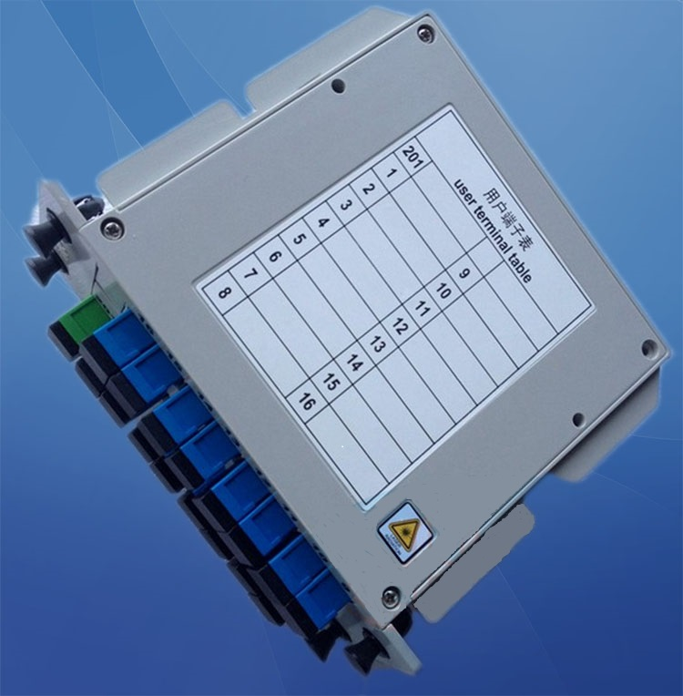
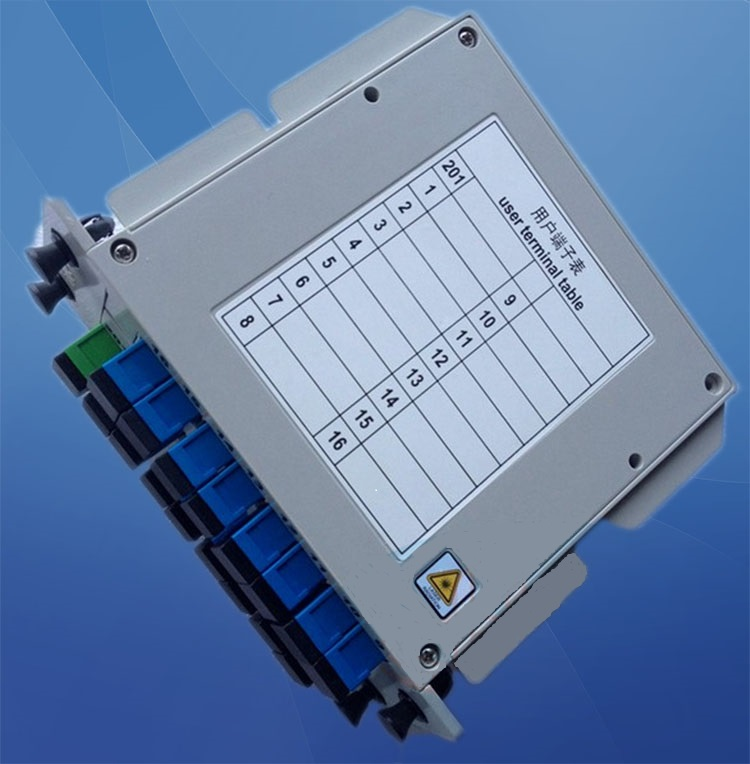

华为分光器
|  | 产品编号： 产品价格： 产品规格： |
| 产品概述 ★光纤分路器是把光信号分路/合路的光纤无源器件， 一般是对同一波长的光信号进行分离或者合路。按照光纤分路器端口排布不同，可以分为对称的星型分路器和不对称的树型分路器；按照光纤类型可以分为单模光纤分路器和多模光纤分路器；按照带宽可以分为窄带光纤分路器和宽带光纤分路器。按照制作方法常见的为熔融拉锥（FBT）型分路器、平面光波导（PLC）分路器。 |
|

|  | 产品编号： 产品价格： 产品规格： |
| 产品概述 ★光纤分路器是把光信号分路/合路的光纤无源器件， 一般是对同一波长的光信号进行分离或者合路。按照光纤分路器端口排布不同，可以分为对称的星型分路器和不对称的树型分路器；按照光纤类型可以分为单模光纤分路器和多模光纤分路器；按照带宽可以分为窄带光纤分路器和宽带光纤分路器。按照制作方法常见的为熔融拉锥（FBT）型分路器、平面光波导（PLC）分路器。 |
|